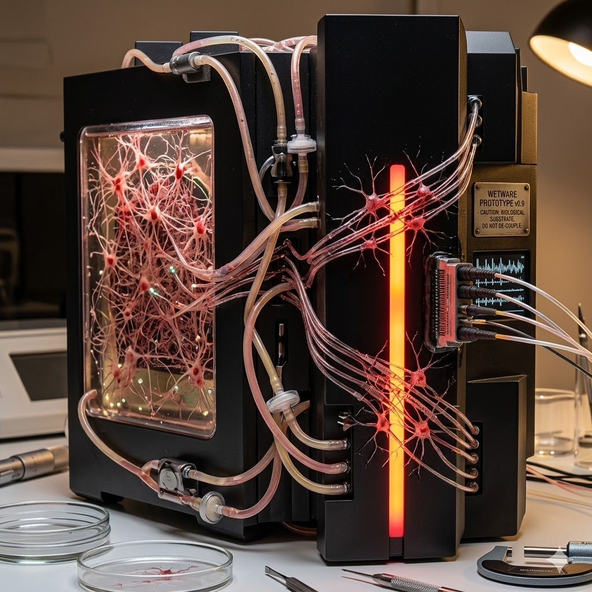

Proyectos Destacados

Proyecto Wetware Mainframe
Una exploración sobre la integración de sistemas biológicos y computacionales para crear una nueva generación de procesamiento de datos.
Ver másAutomatización Robótica de Procesos
Desarrollo de un brazo robótico inteligente para la optimización de tareas repetitivas en entornos de manufactura.
Ver másRed Neuronal para Diagnóstico Médico
Implementación de un modelo de IA para el análisis de imágenes médicas y la detección temprana de patologías.
Ver más